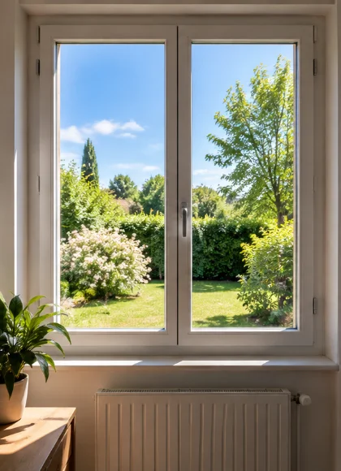
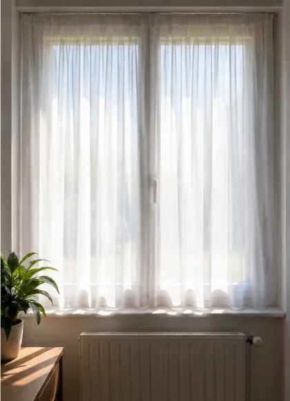
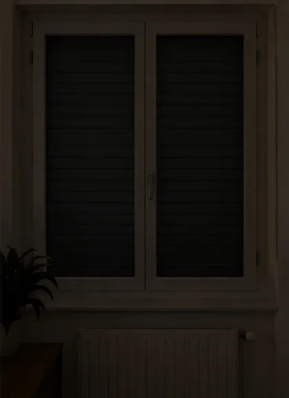

<!DOCTYPE html>
<html lang="fr">
<head>
<meta charset="utf-8">
<meta name="viewport" content="width=device-width, initial-scale=1, viewport-fit=cover">
<meta name="theme-color" content="#0b0e14">
<meta name="robots" content="noindex, nofollow">
<title>La lumière</title>
<!-- Travail « lumiere-1 » — Sciences 4e.
     Séquence 1 « Optique, lumière, ombres et vision », séances 1 à 5 : la vision et le
     sténopé (leçon 1), sources primaires et objets diffusants, propagation rectiligne
     (leçons 2 et 3), opaque / translucide / transparent et ombres (leçon 4).
     Visuels repris des séances : le schéma bougie → œil et le cône d'ombre (fiche
     « Mes 8 leçons »), les trois fenêtres et la gomme éclairée (diaporama de la séance 5).
     Le test de la tache aveugle est celui du document 8 de la séance 1. -->
<link rel="stylesheet" href="../commun/maison.css">
<link rel="stylesheet" href="../commun/jeux.css">
<style>
  /* La tache aveugle sur un quadrillage : quand le rond disparaît, le cerveau y met… du
     quadrillage. C'est bien plus parlant qu'un fond blanc. */
  .aveugle{width:100%;height:150px;display:flex;align-items:center;justify-content:space-between;padding:0 8%;color:#111;font-size:2.6rem;font-weight:800;
       background-color:#fff;background-position:center;background-size:20px 20px;
       background-image:linear-gradient(#7d8797 2px,transparent 2px),linear-gradient(90deg,#7d8797 2px,transparent 2px)}
  /* La gomme du tri : un dessin à la taille des emojis des autres cartes. */
  .carte-tri img[src$="gomme-dessin.svg"]{height:3.6rem;background:none;border-radius:0}
  .aveugle .rond{width:36px;height:36px;border-radius:50%;background:#c62828}
  .fenetres{display:grid;grid-template-columns:repeat(3,1fr);gap:4px;background:#fff;width:100%;padding:6px}
  .fenetres span{display:flex;flex-direction:column;align-items:center;color:#222;font-weight:800;font-size:.85rem}
  .fenetres img{width:100%;border-radius:6px}
  .labo svg{display:block;width:100%;height:auto;background:#fff;border-radius:16px}
  .curseur{display:flex;align-items:center;gap:10px;font-weight:800;color:var(--doux)}
  .curseur input{flex:1;height:44px;accent-color:var(--soleil)}
  .curseur input::-webkit-slider-thumb{width:34px;height:34px}
</style>
</head>
<body>
<main class="ecran" id="ecran"></main>

<script src="../config.js"></script>
<script src="../commun/maison.js"></script>
<script src="../commun/jeux.js"></script>
<script>
'use strict';

var SOURCE = '#ffb020', DIFFUSANT = '#9fb3c8';

/* Trois petits dessins pour « Quel trajet de la lumière est juste ? » */
function scene(fleches){
  var s = '<svg xmlns="http://www.w3.org/2000/svg" viewBox="0 0 220 120"><rect width="220" height="120" fill="#fff"/>' +
    '<circle cx="30" cy="30" r="14" fill="#ffd34d" stroke="#c98a00" stroke-width="2"/><g stroke="#c98a00" stroke-width="2"><path d="M30 8v-6M30 52v6M8 30h-6M52 30h6"/></g>' +
    '<circle cx="110" cy="92" r="14" fill="#e84a3c"/><path d="M110 78l3-8" stroke="#6b4a2a" stroke-width="3"/>' +
    '<ellipse cx="190" cy="30" rx="18" ry="10" fill="#fff" stroke="#333" stroke-width="2"/><circle cx="186" cy="30" r="6" fill="#5a3d2e"/>' +
    '<defs><marker id="f" viewBox="0 0 10 10" refX="8" refY="5" markerWidth="6" markerHeight="6" orient="auto"><path d="M0 0L10 5L0 10z" fill="#1d6fd6"/></marker></defs>';
  fleches.forEach(function(d){ s += '<path d="' + d + '" fill="none" stroke="#1d6fd6" stroke-width="3" marker-end="url(#f)"/>'; });
  return 'data:image/svg+xml,' + encodeURIComponent(s + '</svg>');
}
var TRAJET_JUSTE = scene(['M44 40L98 82', 'M122 84L176 40']);
var TRAJET_OEIL = scene(['M176 40L122 84']);
var TRAJET_COURBE = scene(['M44 40Q60 110 98 92', 'M124 90Q190 100 184 44']);

/* ------------------------------------------------------------------ la lampe */

/* Une lampe à déplacer, un objet opaque, un écran : l'élève règle la lampe pour obtenir
   l'ombre demandée, puis valide. Un point par défi réussi du premier coup. */
var LAMPE = { type: 'perso', max: 3, rendre: function(zone, fin, o){
  var defis = [
    { mode: 'distance', but: 'Fais une ombre portée **très grande** sur l’écran.', ok: function(h){ return h >= 150; },
      aide: 'Approche la lampe de l’objet : plus la source est proche, plus l’ombre est grande.' },
    { mode: 'distance', but: 'Maintenant, fais une ombre portée **petite**.', ok: function(h){ return h <= 72; },
      aide: 'Éloigne la lampe de l’objet : l’ombre devient plus petite.' },
    { mode: 'hauteur', but: 'La lampe éclaire un bâton posé au sol. Fais une ombre **très longue**.', ok: function(l){ return l >= 150; },
      aide: 'Descends la lampe : plus la source est basse, plus l’ombre s’allonge.' }
  ];
  var n = 0, pts = 0;
  function defi(){
    var d = defis[n], essais = 0;
    zone.innerHTML = '<p class="consigne">🔦 ' + o.fmt(d.but) + ' <span class="compte">' + (n + 1) + ' / 3</span></p>' +
      '<div class="labo"></div>' +
      '<label class="curseur">' + (d.mode === 'distance' ? '🔦 loin' : '🔦 bas') +
        '<input type="range" min="0" max="100" value="50" aria-label="Position de la lampe">' + (d.mode === 'distance' ? 'près' : 'haut') + '</label>' +
      '<button type="button" class="btn primaire geant valider">C’est bon !</button>';
    var r = zone.querySelector('input'), labo = zone.querySelector('.labo');
    function mesure(){
      var v = Number(r.value);
      if(d.mode === 'distance'){
        /* Lampe en (L, 100), objet de 40 de haut en x = 220, écran en x = 320. */
        var L = 30 + v * 1.7, h = 40 * (320 - L) / (220 - L), haut = Math.max(10, 100 - h / 2), bas = Math.min(190, 100 + h / 2);
        labo.innerHTML = '<svg viewBox="0 0 340 212"><polygon points="' + L + ',100 320,' + haut + ' 320,' + bas + '" fill="#fff3c4"/>' +
          '<polygon points="220,80 320,' + haut + ' 320,' + bas + ' 220,120" fill="#d5d5d5"/>' +
          '<line x1="' + L + '" y1="100" x2="320" y2="' + haut + '" stroke="#f5a623" stroke-width="2"/><line x1="' + L + '" y1="100" x2="320" y2="' + bas + '" stroke="#f5a623" stroke-width="2"/>' +
          '<rect x="214" y="80" width="12" height="40" fill="#333"/><rect x="318" y="10" width="10" height="180" fill="#fff" stroke="#333" stroke-width="2"/>' +
          '<rect x="318" y="' + haut + '" width="10" height="' + (bas - haut) + '" fill="#333"/>' +
          '<circle cx="' + L + '" cy="100" r="10" fill="#ffd34d" stroke="#c98a00" stroke-width="2"/>' +
          '<text x="' + L + '" y="128" text-anchor="middle" font-size="12" font-family="Nunito" fill="#555">lampe</text>' +
          '<text x="220" y="140" text-anchor="middle" font-size="12" font-family="Nunito" fill="#555">objet</text>' +
          '<text x="323" y="208" text-anchor="middle" font-size="12" font-family="Nunito" fill="#555">écran</text></svg>';
        return bas - haut;
      }
      /* Bâton de 40 de haut en x = 140 au sol (y = 170), lampe en x = 40 à une hauteur variable. */
      var H = 46 + v * 1.2, yL = 170 - H, l = 40 * 100 / (H - 40), fin = Math.min(330, 140 + l);
      labo.innerHTML = '<svg viewBox="0 0 340 200"><rect x="0" y="170" width="340" height="30" fill="#e9e2d6"/>' +
        '<line x1="40" y1="' + yL + '" x2="' + fin + '" y2="170" stroke="#f5a623" stroke-width="2"/>' +
        '<rect x="140" y="167" width="' + (fin - 140) + '" height="6" fill="#333"/>' +
        '<rect x="136" y="130" width="8" height="40" fill="#8a5a2b"/>' +
        '<line x1="40" y1="' + yL + '" x2="40" y2="170" stroke="#999" stroke-width="2" stroke-dasharray="4 3"/>' +
        '<circle cx="40" cy="' + yL + '" r="10" fill="#ffd34d" stroke="#c98a00" stroke-width="2"/>' +
        '<text x="' + Math.min(300, (140 + fin) / 2) + '" y="190" text-anchor="middle" font-size="12" font-family="Nunito" fill="#555">ombre</text></svg>';
      return fin - 140;
    }
    mesure();
    r.addEventListener('input', mesure);
    zone.querySelector('.valider').addEventListener('click', function(){
      var m = mesure();
      if(d.ok(m)){
        o.son.bon(); o.compter(essais === 0); if(essais === 0) pts++;
        o.feuille(true, 'Réussi !', d.aide, function(){ n++; if(n < defis.length) defi(); else fin(pts); });
      } else {
        essais++; o.son.faux(); o.compter(false); o.secouer(labo);
        o.feuille(false, 'Pas encore…', d.aide, function(){});
      }
    });
  }
  defi();
} };

/* L'œil à légender, redessiné ici : l'œil occupe la moitié du schéma pour qu'on
   distingue sur un téléphone la rétine (l'arc rouge) de l'image à l'envers posée contre
   elle. Les rayons partent du haut de la flamme et du bas de la bougie, se croisent
   dans la pupille et s'arrêtent sur la rétine. */
var OEIL_MUET = '<svg xmlns="http://www.w3.org/2000/svg" viewBox="0 0 340 250"><rect width="340" height="250" fill="#fff"/>' +
  '<rect x="22" y="122" width="16" height="24" fill="#fff8e6" stroke="#333" stroke-width="1.5"/>' +
  '<ellipse cx="30" cy="114" rx="6" ry="9" fill="#ffb300" stroke="#d35400" stroke-width="1.5"/>' +
  '<circle cx="244" cy="125" r="90" fill="none" stroke="#2b2b2b" stroke-width="3"/>' +
  '<path d="M277.7 41.6A90 90 0 0 1 277.7 208.4" fill="none" stroke="#c62828" stroke-width="8" stroke-linecap="round"/>' +
  '<path d="M153 78V114M153 136V172" stroke="#2b2b2b" stroke-width="4"/>' +
  '<ellipse cx="164" cy="125" rx="6" ry="17" fill="#dbe9f7" stroke="#2b2b2b" stroke-width="1.5"/>' +
  '<path d="M30 104L329.5 153.1" stroke="#e65100" stroke-width="2.5"/>' +
  '<path d="M30 146L329.5 96.9" stroke="#1565c0" stroke-width="2.5"/><path d="M88 113.5l-9-4v8z" fill="#e65100"/>' +
  '<path d="M88 136.5l-9-4v8z" fill="#1565c0"/>' +
  '<rect x="308.5" y="96.9" width="12" height="47.3" fill="#fff8e6" stroke="#333" stroke-width="1.5"/>' +
  '<ellipse cx="314.5" cy="149.1" rx="4" ry="6" fill="#ffb300" stroke="#d35400" stroke-width="1"/></svg>';

Jeux.lancer({
  devoir: 'lumiere-1',
  titre: 'La lumière',
  ic: '💡',
  duree: '15 min',
  missions: [

    /* ---------------------------------------------------------------- 1 */
    { nom: 'Comment je vois', ic: '👁️', accroche: 'L’œil, la rétine, le cerveau.',
      lecon: [
        { titre: 'L’image dans l’œil', visuel: { img: 'img/oeil.webp', alt: 'La lumière d’une bougie entre par la pupille et forme une image à l’envers sur la rétine', clair: true },
          texte: 'Pour voir, la **lumière** de l’objet doit **entrer** dans l’œil par la **pupille**.\nL’image se forme **à l’envers** sur la **rétine**, comme dans le sténopé.' },
        { titre: 'C’est le cerveau qui voit', visuel: { ic: '👁️ ➜ 🧠' },
          texte: 'La rétine change la lumière en message électrique.\nLe **nerf optique** l’envoie au **cerveau**.\nLe cerveau remet l’image **à l’endroit**.' }
      ],
      jeux: [
        { type: 'legende', consigne: 'Touche le nom du repère qui clignote.', visuel: { svg: OEIL_MUET, alt: 'Schéma de l’œil à légender', clair: true },
          reperes: [{ x: 8.8, y: 67, bon: 'l’objet' }, { x: 45, y: 28, bon: 'la pupille', haut: true }, { x: 88.1, y: 78.4, bon: 'la rétine' }, { x: 80.5, y: 50, bon: 'l’image à l’envers', haut: true }] },
        { type: 'ordre', consigne: 'Le chemin pour voir : remets-le dans l’ordre.',
          items: [{ ic: '🕯️', txt: 'La lumière de l’objet' }, { ic: '⚫', txt: 'La pupille' }, { ic: '🔴', txt: 'La rétine' }, { ic: '〰️', txt: 'Le nerf optique' }, { ic: '🧠', txt: 'Le cerveau' }] },
        { type: 'qcm', q: 'Ferme l’œil **gauche**. Fixe la **croix** avec l’œil droit. Approche puis éloigne doucement le téléphone… Le rond disparaît ! Que vois-tu à sa place ?',
          visuel: { html: '<div class="aveugle"><span>✚</span><span class="rond"></span></div>' },
          choix: ['Le quadrillage, comme autour', 'Un trou blanc', 'Un trou noir'], bon: 0, fixe: true, toujours: true,
          explication: 'C’est ta **tache aveugle** : là où part le nerf optique, la rétine n’a pas de récepteurs. Ton œil ne voit rien à cet endroit… et ton cerveau **complète** avec le quadrillage qu’il y a autour.' }
      ] },

    /* ---------------------------------------------------------------- 2 */
    { nom: 'Source ou objet diffusant ?', ic: '☀️', accroche: 'Qui produit la lumière ?',
      lecon: [
        { titre: 'Deux sortes', visuel: { ic: '☀️ 🌕' },
          texte: 'Une **source primaire** PRODUIT sa lumière : le Soleil, une lampe, une flamme.\nUn **objet diffusant** RENVOIE la lumière qu’il reçoit : la Lune, un livre, un mur.' },
        { titre: 'Dans le noir', visuel: { ic: '🌑' },
          texte: 'Dans le noir total, on ne voit rien.\nUn objet diffusant se voit seulement s’il est **éclairé**.\nLes yeux du chat ne produisent pas de lumière : ils la **renvoient**.' }
      ],
      jeux: [
        { type: 'tri', consigne: 'Il produit sa lumière, ou il la renvoie ?',
          bacs: [{ nom: 'Source primaire', ic: '💡', couleur: SOURCE }, { nom: 'Objet diffusant', ic: '🪞', couleur: DIFFUSANT }],
          cartes: [
            { txt: 'Le Soleil', ic: '☀️', bac: 0, pourquoi: 'Le Soleil est une étoile : il produit sa lumière.' },
            { txt: 'La Lune', ic: '🌕', bac: 1, pourquoi: 'La Lune renvoie la lumière du Soleil.' },
            { txt: 'Une flamme', ic: '🔥', bac: 0, pourquoi: 'Une flamme produit sa lumière.' },
            { txt: 'Un livre', ic: '📕', bac: 1, pourquoi: 'Un livre renvoie la lumière qu’il reçoit.' },
            { txt: 'Un écran de télé allumé', ic: '📺', bac: 0, pourquoi: 'Allumé, l’écran produit sa lumière.' },
            { txt: 'Une pomme', ic: '🍎', bac: 1, pourquoi: 'Une pomme renvoie la lumière : dans le noir, on ne la voit pas.' },
            { txt: 'Un ver luisant', ic: '🐛', bac: 0, pourquoi: 'Le ver luisant produit sa propre lumière.' },
            { txt: 'Les yeux du chat', ic: '🐱', bac: 1, pourquoi: 'Ils renvoient la lumière qu’ils reçoivent : ils ne brillent pas dans le noir total.' }
          ] },
        { type: 'ordre', consigne: 'Nuit de pleine lune : Charlotte voit un arbre. Remets le chemin de la lumière dans l’ordre.',
          items: [{ ic: '☀️', txt: 'Le Soleil' }, { ic: '🌕', txt: 'La Lune' }, { ic: '🌳', txt: 'L’arbre' }, { ic: '👁️', txt: 'L’œil de Charlotte' }],
          explication: 'La lumière part de la source primaire, le Soleil. La Lune et l’arbre la renvoient jusqu’à l’œil.' }
      ] },

    /* ---------------------------------------------------------------- 3 */
    { nom: 'Tout droit !', ic: '📏', accroche: 'Rayons et faisceaux.',
      lecon: [
        { titre: 'La lumière va tout droit', visuel: { img: TRAJET_JUSTE, alt: 'Lampe vers objet vers œil', clair: true },
          texte: 'Dans un milieu **homogène**, comme l’air, la lumière va **en ligne droite**.\nOn la dessine avec un **rayon** : un trait droit, avec une **flèche**, de la source vers l’objet, puis vers l’œil.' },
        { titre: 'Un faisceau invisible', visuel: { ic: '🔦🌫️' },
          texte: 'Un **faisceau**, c’est un ensemble de rayons.\nIl est **invisible**… sauf s’il rencontre de la poussière ou du brouillard.\nDans l’eau puis l’air, la lumière peut être **déviée**.' }
      ],
      jeux: [
        { type: 'qcm', q: 'Quel dessin montre le **bon** trajet de la lumière ?', grille: true,
          choix: [{ img: TRAJET_JUSTE, txt: 'A' }, { img: TRAJET_OEIL, txt: 'B' }, { img: TRAJET_COURBE, txt: 'C' }], bon: 0,
          explication: 'A : la lumière part de la source, va tout droit jusqu’à l’objet, puis jusqu’à l’œil. L’œil n’envoie rien.' },
        { type: 'eclair', consigne: 'Vrai ou faux ?', secondes: 0, items: [
          { q: 'Dans l’air, la lumière se propage en ligne droite.', vrai: true, explication: 'L’air est un milieu homogène : la lumière va tout droit.' },
          { q: 'Pour voir, l’œil envoie des rayons vers les objets.', vrai: false, explication: 'C’est l’inverse : la lumière des objets ENTRE dans l’œil.' },
          { q: 'Le brouillard permet de voir le faisceau des phares.', vrai: true, explication: 'Les gouttes du brouillard renvoient un peu de lumière : on voit le faisceau.' },
          { q: 'Dans une pièce sans poussière, on voit le faisceau d’un laser dans l’air.', vrai: false, explication: 'Sans poussière ni fumée, le faisceau est invisible.' },
          { q: 'Quand la lumière passe de l’eau à l’air, elle peut être déviée.', vrai: true, explication: 'Eau puis air : milieu hétérogène, la lumière peut changer de direction.' }
        ] }
      ] },

    /* ---------------------------------------------------------------- 4 */
    { nom: 'Opaque ou transparent ?', ic: '🪟', accroche: 'La lumière passe-t-elle ?',
      lecon: [
        { titre: 'Trois mots', visuel: { html: '<div class="fenetres"><span>transparent</span>' +
            '<span>translucide</span><span>opaque</span></div>' },
          texte: '**Transparent** : la lumière passe, on voit **net** à travers (la vitre).\n**Translucide** : la lumière passe, mais on ne voit **pas net** (le rideau).\n**Opaque** : la lumière ne passe **pas** (le volet).' }
      ],
      jeux: [
        { type: 'qcm', q: 'À travers le **rideau**, la lumière passe mais on ne voit pas net. Il est…', visuel: { img: 'img/rideau.webp', alt: 'Un rideau léger devant une fenêtre' },
          choix: ['translucide', 'transparent', 'opaque'], bon: 0, fixe: true, explication: 'La lumière passe sans qu’on voie net : translucide.' },
        { type: 'tri', consigne: 'Comment laisse-t-il passer la lumière ?',
          bacs: [{ nom: 'Opaque', ic: '⬛', couleur: '#8892a4' }, { nom: 'Translucide', ic: '🌫️', couleur: '#c6b8ff' }, { nom: 'Transparent', ic: '🪟', couleur: '#7fdcff' }],
          cartes: [
            { txt: 'Le carton', ic: '📦', bac: 0, pourquoi: 'Aucune lumière ne passe : opaque.' },
            { txt: 'Le verre', ic: '🥛', bac: 2, pourquoi: 'On voit net à travers : transparent.' },
            { txt: 'Le papier calque', ic: '📜', bac: 1, pourquoi: 'La lumière passe, mais on ne voit pas net : translucide.' },
            { txt: 'L’aluminium', ic: '🥫', bac: 0, pourquoi: 'Aucune lumière ne passe : opaque.' },
            { txt: 'L’eau', ic: '💧', bac: 2, pourquoi: 'On voit net à travers : transparent.' },
            { txt: 'Le papier bulle', ic: '🫧', bac: 1, pourquoi: 'La lumière passe sans qu’on voie net : translucide.' },
            { txt: 'La gomme', img: 'img/gomme-dessin.svg', bac: 0, pourquoi: 'Aucune lumière ne passe : opaque.' },
            { txt: 'La règle en plastique', ic: '📏', bac: 2, pourquoi: 'On lit à travers : transparent.' }
          ] }
      ] },

    /* ---------------------------------------------------------------- 5 */
    { nom: 'Les ombres', ic: '🔦', accroche: 'Déplace la lampe !',
      lecon: [
        { titre: 'Pour faire une ombre', visuel: { img: 'img/gomme.webp', alt: 'Une lampe torche éclaire une gomme : son ombre est sur la table' },
          texte: 'Il faut une **source** de lumière, un objet **opaque** et un **support** : la table, le sol, un écran.' },
        { titre: 'Ombre propre, ombre portée', visuel: { img: 'img/ombre.webp', alt: 'Le cône d’ombre derrière un objet opaque', clair: true },
          texte: 'L’**ombre propre** : la partie de l’objet qui n’est pas éclairée.\nL’**ombre portée** : la zone sombre sur l’écran ou le sol.' },
        { titre: 'La place de la lampe', visuel: { ic: '🔦↔️' },
          texte: 'Source **proche** de l’objet : grande ombre.\nSource **basse** : ombre **longue**.' }
      ],
      jeux: [
        LAMPE,
        { type: 'legende', consigne: 'Touche le nom du repère qui clignote.', visuel: { img: 'img/gomme.webp', alt: 'Une lampe éclaire une gomme' },
          reperes: [{ x: 22, y: 30, bon: 'la source' }, { x: 58, y: 47, bon: 'l’objet opaque' }, { x: 82, y: 57, bon: 'l’ombre portée' }] },
        { type: 'qcm', q: 'La partie de la gomme qui n’est **pas** éclairée s’appelle…',
          choix: ['l’ombre propre', 'l’ombre portée', 'la pénombre'], bon: 0,
          explication: 'Ombre PROPRE : sur l’objet lui-même. Ombre PORTÉE : sur le support.' }
      ] }
  ]
});
</script>
</body>
</html>
